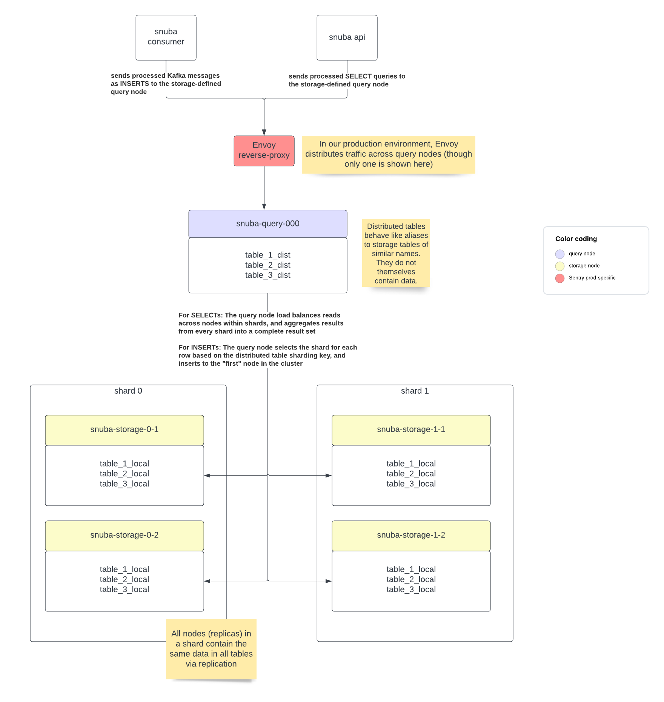

ClickHouse Topology Best Practices¶
Sentry has a few conventions for using ClickHouse that are not inherent to the database but useful to consider if you intend to create new tables or datasets.
Storage nodes vs. Query nodes¶
We tend to deploy two different types of nodes in production:
storage nodes – these contain table data for a given shard, and replicate data between other nodes of that shard. For most datasets, they are not queried directly.
query nodes – these contain references to tables on storage nodes via distributed tables, and are intended to be queried directly by the API or written to directly by consumers. They do not themselves store data but aggregate or delegate to tables on the storage node.
This separation allows us to do maintenance on storage nodes in a way that is invisible to the application (as the query nodes generally act as a proxy, and can more generally be kept up indefinitely).
Distributed Tables vs. Local Tables¶
Astute snuba users might notice that migrations contain references to tables with names
suffixed with _local and table names suffixed with _dist. This is used to
distinguish between distributed tables (generally using the ClickHouse table engine
Distributed)
and local tables (generally using one of the
MergeTree-derived
table engines). Distributed tables exist to aggregate from the shards of local tables, and following
the sequence above, distributed tables tend to be created on query nodes and local tables
tend to be created on storage nodes.
Tying it all together¶
This diagram hopefully combines all the above concepts into an understandable quick to consume format.
